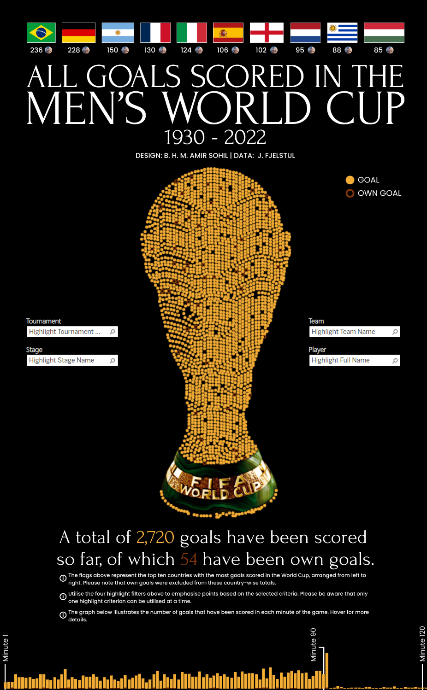

All Goals in the Men's World Cup
Every goal in World Cup history, plotted inside the shape of the trophy itself.

The Problem
Nearly a century of World Cup history (from 1930 to 2022 across 22 tournaments) is usually explored through record books and stat tables. The goal was to make that entire scoring history explorable and visually legible in a single view, built around the tournament's own most recognisable symbol.
The Approach
Every one of the 2,720 recorded goals is rendered as an individual point inside a silhouette of the FIFA World Cup trophy itself, with own goals (54 of them) visually distinguished from regular goals. A minute-by-minute breakdown runs beneath the trophy as a supporting layer, showing when in a match goals actually happen.
Four highlight filters let a viewer isolate any single goalscoring thread within the full dataset:
- Tournament — isolate a single World Cup year
- Stage — group stage, knockout rounds, final
- Team — every goal scored by one nation
- Player — one player's full World Cup scoring record
By design, only one filter can be active at a time, so the selected view stays clear and easy to read.
Design Decisions
The aim was to merge historical depth with a bold visual identity. What better way of doing this than transforming nine decades of football data into an intuitive, engaging, and emotionally resonant experience, built around one of sport's most recognisable symbols.
Own goals are a real and recorded part of World Cup scoring history, making up 54 of the 2,720 goals. I have visually marked them as distinct from regular goals, avoiding oversimplification.
Tournament, stage, team, and player filters could easily stack into a tangle of competing highlights. Deliberately limiting the view to one active filter keeps any single goalscoring thread readable against the full 2,720-goal field.
The Outcome
The top-scoring-nations ribbon puts Brazil and Germany well clear of the rest of the field, with Argentina a distant third.
The minute-by-minute chart shows the same late-game clustering seen in club-level data elsewhere in the portfolio (the Klopp-era Liverpool goals project shows an identical pattern).
Goals piling up in stoppage time is a structural feature of the sport across nine decades of World Cup history.